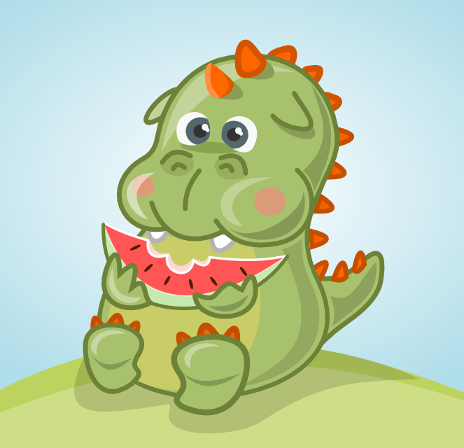

MATEMÁTICAS · 4 NIVELES · 24 MISIONESAcademia de DragonesMultiplica dos cifras por una. Completa las casillas, descubre pistas y entrena a Chispa para volar.¡Jugar!Nuevo: nivel 4 · Guardianes, con retos hasta 79 × 8.